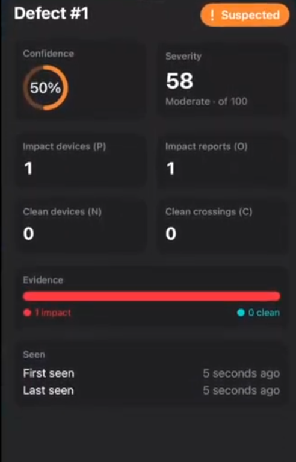
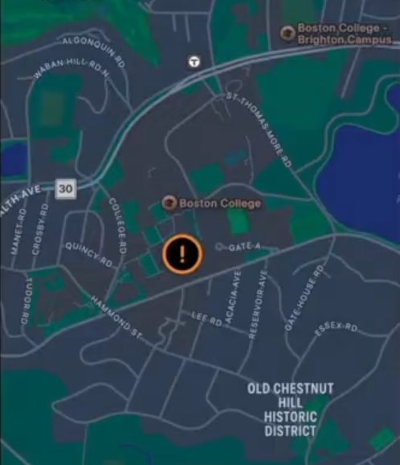

PatchMap
A crowdsourced iOS application designed to detect, verify, and track potholes using smartphone sensors.
Project Overview
PatchMap was developed by a team of four Boston College students for Hackachusetts 2026, using Kiro as the main AI development agent. The project aims to improve road maintenance by automatically detecting potholes and providing updated road condition information to drivers and city officials.
Tools and Helpers
- Swift and SwiftUI
- Python, FastAPI, and SQLite
- Core Motion and Core Location
- MapKit and REST API
- Kiro AI
Development Process
- Developed PatchMap, an iOS application that uses crowdsourced sensor data to detect, verify, and track potholes in real time.
- Utilized iPhone gyroscope and GPS to identify road impacts based on acceleration, jerk, vehicle speed, and rotation.
- Implemented a backend system using FastAPI, Python, and SQLite to cluster nearby observations and confirm potholes through reports from multiple devices.
- Designed a live interactive map using SwiftUI and MapKit to display pothole locations, severity, confidence levels, and repair status.
- Used Kiro AI throughout development for project planning, code generation, debugging, and testing, achieving 235 passing backend tests and 72 passing iOS tests.
- Prioritized user privacy by processing raw sensor data locally and transmitting only anonymous observations, while validating detection functionality on physical iPhones.
Project Images
Add screenshots or pictures of your project below.


-->Results
- Completed a functioning iOS application within the Hackachusetts 2026 hackathon.
- Successfully tested motion impact detection and clean-crossing detection on physical iPhones.
- Passed 235 backend tests and 72 iOS tests, along with a successful iOS build.
- Created a Demo Mode to simulate multiple vehicles detecting, confirming, and resolving potholes.